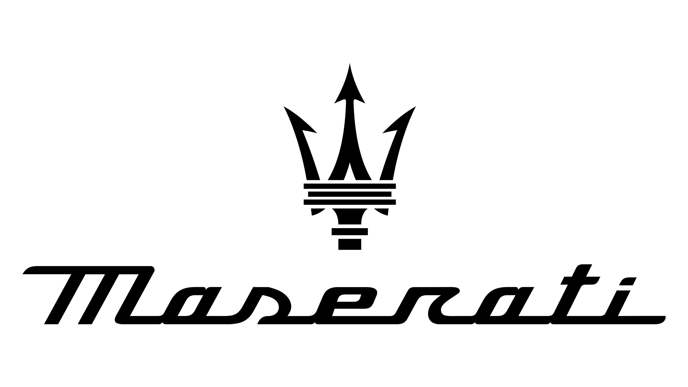
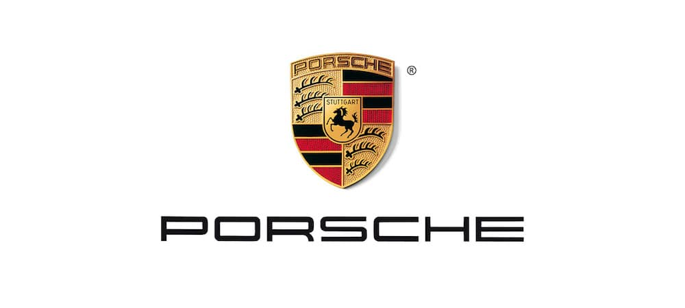
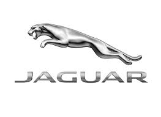

Ferrari
Ferrari es una marca italiana de automóviles deportivos y de competición. Fundada en 1947 por Enzo Ferrari, la empresa se ha destacado por sus modelos de altas prestaciones y por su participación en competiciones de Fórmula 1.

Modelos disponibles:
- Ferrari 488 GTB
- Ferrari Portofino
- Ferrari F8 Spider
Lamborghini
Lamborghini es una marca italiana de automóviles deportivos de lujo. Fundada en 1963 por Ferruccio Lamborghini, la empresa se ha destacado por sus diseños extravagantes y por sus altas prestaciones.

Modelos disponibles:
- Lamborghini Huracán
- Lamborghini Aventador
- Lamborghini Urus
Maserati
Maserati es una marca italiana de automóviles deportivos de lujo. Fundada en 1914 por los hermanos Maserati, la empresa se ha destacado por sus diseños elegantes y por su combinación de altas prestaciones y confort.
Modelos disponibles:
- Maserati Ghibli
- Maserati Quattroporte
- Maserati Levante
Aston Martin
Aston Martin es una marca británica de automóviles deportivos de lujo. Fundada en 1913 por Lionel Martin y Robert Bamford, la empresa se ha destacado por sus diseños elegantes y por su participación en competiciones de automovilismo.

Modelos disponibles:
- Aston Martin DB11
- Aston Martin Vantage
- Aston Martin DBS Superleggera
Porsche
Porsche es una marca alemana de automóviles deportivos de lujo. Fundada en 1931 por Ferdinand Porsche, la empresa se ha destacado por sus diseños icónicos y por su participación en competiciones de automovilismo.
Modelos disponibles:
- Porsche 911
- Porsche Cayenne
- Porsche Panamera
Rolls Royce
Rolls Royce es una marca británica de automóviles de lujo. Fundada en 1904 por Charles Rolls y Henry Royce, la empresa se ha destacado por sus diseños elegantes y por su enfoque en la calidad y el confort.

Modelos disponibles:
- Rolls Royce Ghost
- Rolls Royce Wraith
- Rolls Royce Phantom
Mclaren
McLaren es una empresa británica fabricante de automóviles de alto rendimiento y carreras, fundada en 1963 por Bruce McLaren.

Modelos disponibles:
- Mclaren Senna
- McLaren 765LT
- McLaren 720S
Jaguar
Jaguar es una marca británica de automóviles de lujo. Fundada en 1922, la empresa se ha destacado por sus diseños elegantes y por su combinación de altas prestaciones y confort.
Modelos disponibles:
- Jaguar F-Type
- Jaguar XJ
Tesla
Tesla es una marca estadounidense de automóviles eléctricos de lujo. Fundada en 2003 por Elon Musk, la empresa se ha destacado por su enfoque en la tecnología y la sostenibilidad.

Modelos disponibles:
- Tesla Model S
- Tesla Model X
- Tesla Model 3
- Tesla Model Y
Mercedes
Mercedes-Benz es una marca alemana de automóviles de lujo. Fundada en 1926, la empresa se ha destacado por su enfoque en la calidad y la tecnología.

Modelos disponibles:
- Mercedes-Benz S-Class
- Mercedes-Benz E-Class
- Mercedes-Benz C-Class